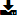

Ändert das eingegebene Passwort für den Start des cotodesign Templates und der cotodesign Order Viewer.
Ändern Sie das Passwort regelmäßig zur besseren Sicherheit.
Template Liste und Print-Layout-Liste |
Hier handelt es sich um die Listen der in cotodesign registrierten „Template“ und „Print Layout“.
Schaltflächen in der rechten oberen Bildschirmecke

Ändert das eingegebene Passwort für den Start des cotodesign Templates und der cotodesign Order Viewer.
Ändern Sie das Passwort regelmäßig zur besseren Sicherheit.

Zeigt die Online-Hilfedatei an.
SPRACHE

Ändert die Anzeigesprache.
Template Liste

Erstellt ein neues Template.
• Siehe auch >> Bestimmung der Größe und des Druckverfahrens für ein Template

Bearbeitet das Template.

Importiert eine SVG-Datei und fügt ein neues Template hinzu.
Für Spezifikationen zu SVG-Dateien, siehe „cotodesign Anleitung für die Installation“.
Zeigt die Template-Vorschau an.
Die Einstellungen können nicht geändert werden.

Löscht das Template.

Importiert eine Template-Datei und lädt sie auf den Server hoch.

Speichert das ausgewählte Template.

Geben Sie einen Teil eines Template-Namens ein, um die Template-Dateien zu filtern, die in der Template-Liste angezeigt werden.
NAME
Zeigt den Dateinamen des registrierten Templates an.
Für die Benennung von Templatedateien gelten Namenskonventionen. Die verschiedenen Konfigurationsebenen werden mithilfe von Punkten getrennt.
DRUCKART
Wenn Sie einen Drucker verwenden, wählen Sie „Farbdruck“. Wählen Sie bei Verwendung eines Laser Decorators „Foliendruck“ aus. Wenn Sie einen Metalldrucker verwenden, wählen Sie „Metallaufdruck“. Wenn Sie eine Schneidemaschine verwenden, wählen Sie „Schneiden“.
Klicken Sie auf „▼“ und wählen Sie „DRUCKART“, um die Template-Dateien zu filtern, die in der Template-Liste angezeigt werden.
SPEZIALEFFEKT
Wenn „SPOT-FARBE“ zum Erstellen einer Template-Datei verwendet wird, wird ein Symbol angezeigt, das dem Spezialeffekt entspricht.
Print-Layout-Liste

Erstellt ein neues Print-Layout.

Ändert die Print-Layout-Einstellungen.
Importiert eine SVG-Datei und fügt ein neues Print-Layout hinzu.
Für Spezifikationen zu SVG-Dateien, siehe „cotodesign Anleitung für die Installation“.
Zeigt die Print-Layout-Vorschau an.
Die Einstellungen können nicht geändert werden.

Löscht das Print-Layout.

Importiert eine Drucklayoutdatei und lädt sie auf den Server hoch.

Speichert das ausgewählte Drucklayout.
VERBINDEN
Wählt das Print-Layout, in welches das Template platziert werden soll.
Jedes Template erfordert zumindest ein Print-Layout, auf das es platziert wird. Templates, die nicht platziert wurden, können nicht gedruckt werden.
Es können mehrere Drucklayouts als Platzierungsort eines einzelnen Templates ausgewählt werden. Templates und Drucklayouts können jedoch nur dann kombiniert werden, wenn sie die gleiche Druckart haben. Beispielsweise können Templates, die für den Farbdruck vorgesehen sind, nur mit Drucklayouts für den Farbdruck verknüpft werden. Verwenden Sie den cotodesign Print Manager, um festzulegen, welche Print-Layouts welche Templates beinhalten.
STANDARD
Wählt das Drucklayout, in dem Templates automatisch platziert werden, wenn das Kontrollkästchen [Automatisches Auftrags-Layout] in cotodesign Print Manager aktiviert ist.
NAME
Zeigt den Dateinamen des Print-Layouts an.
DRUCKART
Wenn Sie einen Drucker verwenden, wählen Sie „Farbdruck“. Wählen Sie bei Verwendung eines Laser Decorators „Foliendruck“ aus. Wenn Sie einen Metalldrucker verwenden, wählen Sie „Metallaufdruck“. Wenn Sie eine Schneidemaschine verwenden, wählen Sie „Schneiden“.
Klicken Sie auf „▼“ und wählen Sie „DRUCKART“, um die Dateien zu filtern, die in der Print-Layout-Liste angezeigt werden.
SPEICHERN
Speichert die Einstellungen zum Platzierungsort des Templates und Print-Layouts am Server.
Copyright (C) 2018-2019 Roland DG Corporation